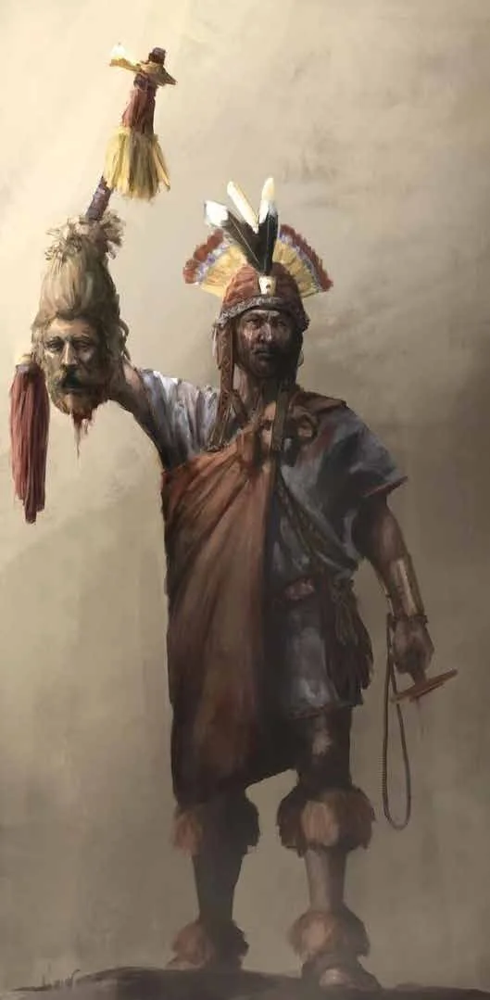
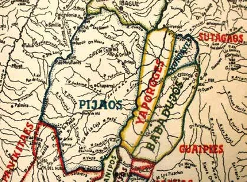
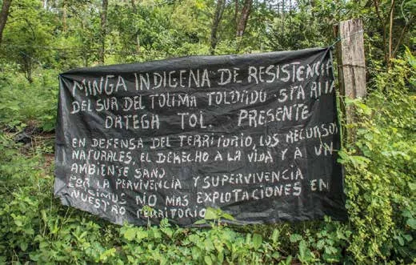
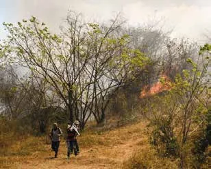

Historia
Resistencia Pijao y lucha por el territorio
Una federación entre cordilleras
El pueblo Pijao habitó el alto valle del río Magdalena y las cordilleras del actual Tolima, entre los nevados del Huila, el Tolima y el Quindío. No fue un imperio: fue una federación de parcialidades unidas por rasgos culturales comunes y por familias extensas como base de su liderazgo.
Su historia suele contarse desde la mirada de quienes los combatieron. Aquí la contamos desde la memoria, la dignidad y la resistencia.
Conocer su cultura
Línea de tiempo
De la conquista a la defensa actual del territorio.
-
Antes de la conquista
Un territorio desde Ibagué hacia el sur
Los Pijao ocupaban el valle del Magdalena y partes de las cordilleras Central y Oriental. Cultivaban maíz, yuca y otros alimentos, pescaban, navegaban en canoas talladas de un solo tronco y trabajaban el oro con la técnica de la cera perdida.
-
Siglo XVI
Nombres que no eran suyos
Los españoles los llamaron primero «Bipxaus» y luego «Pijao». Desde 1591 se aliaron con el pueblo Nasa para resistir a los colonizadores.
-
Siglos XVI y XVII
Casi un siglo de resistencia
Los Pijao defendieron su territorio una y otra vez. Los mohanes, sus líderes espirituales, militares y mediadores, fueron perseguidos y asesinados por los conquistadores.
-
1606 – 1607
Calarcá, capitán general
En 1606 el cacique Calarcá asumió la capitanía general de los Pijao cuando ya quedaban pocos miles de indígenas. Murió en 1607 tras ser herido en combate.
-
Hacia 1608
La derrota militar
La guerra terminó con la derrota de los Pijao. Su población se redujo, muchas comunidades fueron empujadas hacia el sur y sus tierras fueron arrebatadas primero por los españoles y después por colonos.
-
Siglo XVIII
Enfermedades y conversión forzada
A mediados del siglo, los Pijao sufrieron pérdidas drásticas por enfermedades infecciosas nuevas y por la conversión forzada impuesta por misioneros cristianos.
-
Siglo XX
De la tierra perdida a los cabildos
Hacia mediados del siglo casi todas las tierras estaban perdidas y la lengua pijao dejó de hablarse (en la década de 1950). Aun así, las comunidades se organizaron en cabildos y resguardos apoyándose en la Ley 89 de 1890, con liderazgos como el de Manuel Quintín Lame.
-
Hoy
Plan de Vida y defensa del territorio
Las comunidades trabajan en su Plan de Vida, que busca reconstruir el Gran Resguardo de Ortega y Chaparral y recuperar territorios. En 2003, la Comisión Interamericana de Derechos Humanos otorgó medidas de protección a integrantes de 15 cabildos y resguardos Pijao.
Calarcá y la memoria de la resistencia
Calarcá es el nombre más recordado de la guerra Pijao. Su figura sigue viva: un municipio del Quindío lleva hoy su nombre. Algunas investigaciones cuestionan el relato tradicional de su muerte, difundido por las élites de Ibagué de la época, y recuerdan que la historia oficial también se escribió desde el bando vencedor.
Por eso, a la entrada del recorrido virtual, el cartel «Resistencia Pijao» recuerda la defensa del territorio frente a la conquista y a caciques como Calarcá, y en la galería el marco «Historia y resistencia» cuenta la alianza con los Nasa de 1591 y la pérdida de tierras en el siglo XX.
Ver el recorrido virtual- 1606
- Calarcá es capitán general de los Pijao.
- 1607
- Muere después de ser herido en combate.
- Hoy
- Su nombre identifica a un municipio del Quindío.
- Memoria
- El cartel «Resistencia Pijao» y el marco «Historia y resistencia» del recorrido VR lo recuerdan.
Más allá del estigma colonial
Las crónicas escritas por los conquistadores retrataron a los Pijao como «salvajes». Esa imagen sirvió para justificar la guerra y todavía circula. Algunas de sus afirmaciones, como las cifras de españoles que supuestamente devoraron, no tienen una fuente verificable.
El pueblo Pijao de hoy no es una pieza de museo: es una comunidad con cabildos, gobernadores elegidos cada año, huertas, mingas y una larga tradición de defensa del agua y del territorio.

La lucha continúa
La historia no terminó en 1608. Hoy el territorio sigue bajo presión.


Lo que está en juego
- Presión de colonos, empresas y actores armados sobre las tierras indígenas.
- Desplazamiento y violencia: entre 2003 y 2008 las víctimas de desplazamiento en la región Pijao fueron el 26 % de las del Tolima.
- Pérdida de saberes y prácticas tradicionales.
- Falta de atención adecuada en salud y educación.
Fuente de las cifras: Ministerio de Cultura.
Sigue explorando
Fuentes consultadas
- Ministerio de Cultura de Colombia: caracterización del pueblo Pijao (Coyaima y Natagaima)
- Wikipedia: Pijao people (consultada para fechas y rasgos generales; algunos datos requieren verificación)
- Las2orillas: la mentira detrás de la muerte del cacique Calarcá
- Pueblos Originarios: deidades Pijao (referencia del manual de marca)